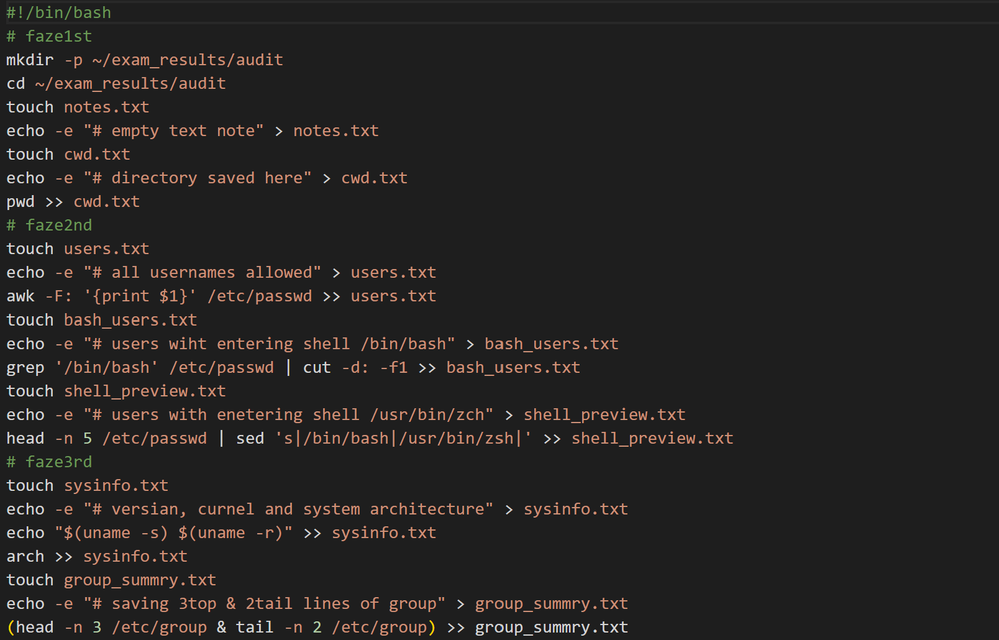
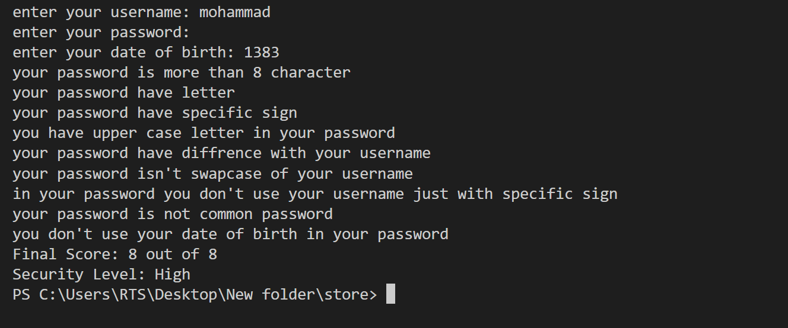
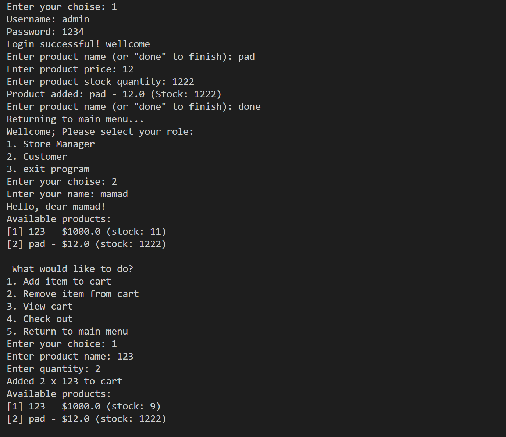
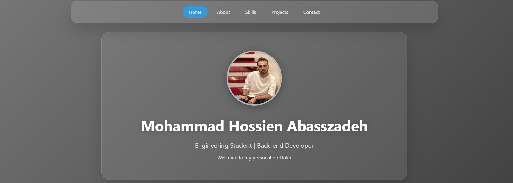

In this project I have tried to design a bash script for simple Linux system checking. This bash script gives information about permissions, system status and users. In this way: it creates several .txt files in a directory, each containing information such as user names, system architecture, and the output of specific commands such as ls -l.
View on GitHub
This project uses Python and provides a code to receive the user's username and password. After receiving 8 simple filters such as: having uppercase letters, numbers, special characters (@,!,...) and at least 8 characters. One of its filters checks whether the password is the same as the username with special characters or not.
View on GitHub
In this project, a small store is designed with three actions: product registration, product selection, and bill payment. Product registration is done by the admin (usrn = admin, pass = 1234) and the products are stored in a .json file. In the customer section, he has the ability to add products to his shopping cart, remove them from the cart, view the cart, and pay for the cart. All customer actions are saved in a .csv file and his name. To make it more user-friendly, a very simple user interface has been designed.
View on GitHub
Personal portfolio with glassmorphism design. Built with HTML, CSS, and JavaScript. In this project, I tried to design a homepage that would display a summary of information such as: about me, my skills, my projects, and my contact information. I then tried to take inspiration from multi-page sites and display more information on those pages than the homepage. This portfolio was built with the help of artificial intelligence.
View on GitHub